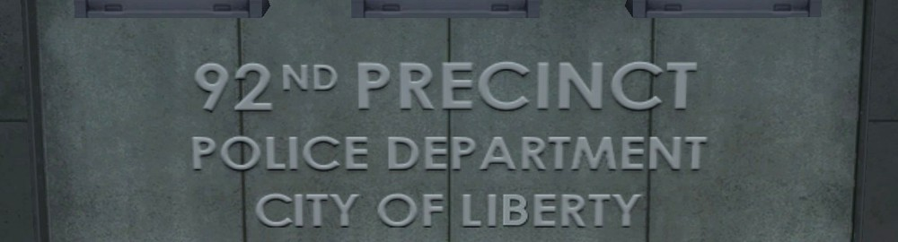

LCPD получит новое финансирование. Но станет ли Брокер безопаснее?
Либерти-Сити, Брокер, 14 ноября 2007 года

Похоже, городские власти наконец обратили внимание на ситуацию с преступностью в Брокере. После череды вооружённых ограблений, нападений и сообщений о незаконном обороте оружия администрация Либерти-Сити объявила о намерении увеличить финансирование местного полицейского департамента.
Согласно предварительным сведениям, дополнительные средства планируется направить на обновление патрульных автомобилей, закупку оборудования и расширение штата сотрудников LCPD.
Представители департамента называют это необходимым шагом. По их словам, существующих ресурсов уже недостаточно для эффективного поддержания порядка на улицах района.
«Наши сотрудники ежедневно сталкиваются с ситуациями, требующими незамедлительного реагирования. Дополнительное финансирование позволит нам работать эффективнее и обеспечить безопасность жителей Брокера».
Представитель пресс-службы LCPD
Звучит обнадёживающе. Но есть один вопрос: почему властям потребовалось столько времени, чтобы заметить проблему, о которой жители говорят давно?
Жители Брокера уже давно жалуются на ночные перестрелки, уличные ограбления и отсутствие патрулей в отдельных кварталах. Некоторые предприниматели предпочитают закрывать свои заведения раньше обычного, опасаясь за собственную безопасность.
Впрочем, увеличение бюджета ещё не означает, что деньги действительно дойдут до улиц.
Кто будет контролировать расходы? На какие именно нужды направят средства? И самое главное, получат ли жители Брокера реальную защиту или очередное обещание от городской администрации?
Мы продолжим следить за развитием ситуации и обязательно сообщим, когда появятся первые результаты.
Лучше всего отображается при разрешении 800x600.
Вы наш посетитель номер 000417